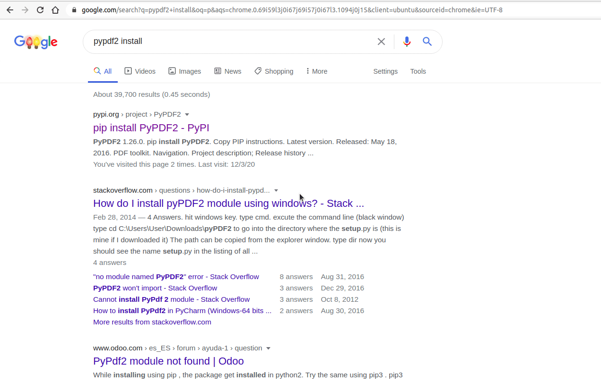

Lezione 02
Primo script
Ogni file python ha un’estensione .py.
Per l’esecuzione di uno script python è possibile lanciare il file creato con l’estensione .py (esempio test.py) direttamente dal terminale digitando il comando per l’invocazione dell’interprete python python3 ad esempio python3 test.py all’interno della cartella contenente il file test.py oppure attraverso l’estensione appena installata per VS code Run/Start Debugging
Ecco l’esecuzione del primo script python
print('ciao mondo')

Aggiunta di moduli
Per l’aggiunta di un modulo che rientra nella libreria standard python basta semplicemente digitare:
import <nomeModulo>
A volte tuttavia potremmo aver bisogno di un modulo non standard disponibile sul web. Per installarlo possiamo far ricorso al pacchetto pip che permette la gestione e l’installazione dei moduli aggiuntivi python.
Supponiamo di voler scaricare il modulo PyPDF2 per la gestione dei PDF. Digitare da terminale
pip install PyPDF2
Qualora si avessero dubbi sul nome del modulo o sul comando esatto, niente paura, il browser ci è di supporto

Introduzione a webbrowser
Il seguente script aprirà una località su google.maps digitata come input dall’utente.
Utilizzeremo il comando input() che permette l’acquisizione dati da tastiera e la funzione open del modulo python webbrowser.
La funzione open permette di aprire un certo url specificato come parametro tra gli apici. Il parametro è quindi passato come una stringa e come tale valgono tutte le operazioni e i metodi applicabili su stringa tra cui l’operatore + utilizzato per concatenare due o più stringhe .
input(): consente l’acquisizione dati da tastiera dell’utente.webbrowser.open(myUrl): Apre l’indirizzo web specificato dal parametro myUrl. Il parametro specificato viene passato come stringa+: Operatore di concatenazione stringhe
Ecco lo script completo:
import webbrowser
destinazione = input()
webbrowser.open('https://www.google.com/maps' + '/place/' + destinazione)

E’ possibile ridurre ancora il codice
import webbrowser
webbrowser.open('https://www.google.com/maps' + '/place/' + input())
Come rendo eseguibile un file python?
Linux
Aggiungere la seguente linea di codice in testa allo script:
#!/usr/bin/env python3
Ad esempio:
#!/usr/bin/env python3
import webbrowser
webbrowser.open('https://www.google.com/maps' + '/place/' + input())
E’ sufficiente rendere il file eseguibile (all’interno delle proprietà del file sezione “permessi”) e lanciarlo da terminale.

Commenti
# questo è un commento e verrà ignorato dall'interprete
print('ciao')